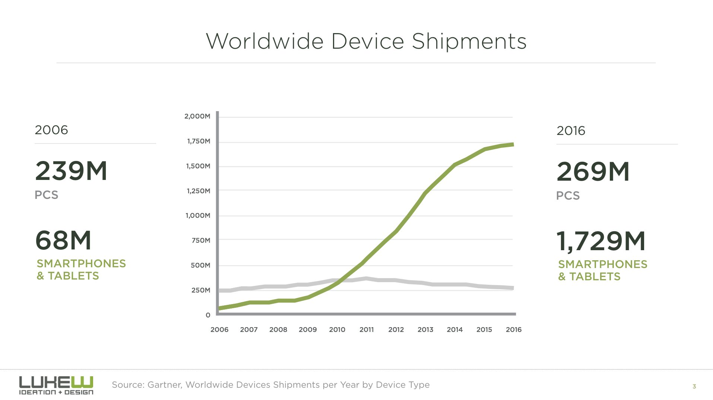
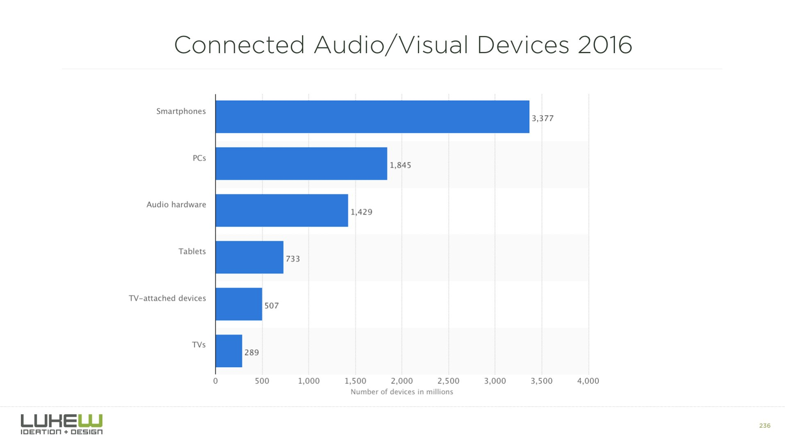

Производительность
web-приложения
- Скорость загрузки
- Скорость работы
- Потребление энергии
Загрузка приложения
Критический контент должен укладываться в 14Kb (размер одного TCP пакета).
В 3G-сети сайт должен быть доступен максимум через 3 секунды. Но помимо загрузки данных в это время входят и задржки самой сети:
- Control Plane - ~50мс-2500мс (при пробуждении устройства)
- User Plane + Core Network - ~50мс-500мс
Скорость работы приложения
- Отклик за ~0-100 мс. воспринимается как моментальный
- Отклик за ~300-1000 мс. может восприниматся как "притормаживающий"
- При отклике интерфейса больше чем в 1 сек. у пользователя происходит смена контекста и потеря внимания
Расход энергии
Доступ к сайту на мобильном телефоне не бесплатен и расходует энергию. Пользователя нужно убедить, что ваш сайт стоит потери этих ресурсов или минимизировать эти потери.
Больше всего энергии потребляют:
- Видео
- Изображения (большие или масштабированные)
- JavaScript UI thread
Статистика
Пользователи
- 1.1 млрд. человек имеет стабильный доступ к интернету
- 3.2 млрд. человек имеет доступ к интернету в принципе
- 5.2 млрд. человек владеет мобильным телефоном
- 7 млрд. человек живет в зоне покрытия как минимум одной сотовой вышки
Устройства
Устройства
- Юго-Восточная Азия самый быстрорастущий интернет-рынок
- В Индии количество интернет позьзователей удвоится к 2018 году (с 190 млн. до 400 млн.)
- В Китае из 690 млн. интернет-пользователей 620 млн. использует для доступа мобильный телефон. Многие из них используют исключительно телефон
Трафик
Львиная доля трафика с мобильных платформ:
- 2011 — Facebook
- 2012 — Twitter, Google+
- 2013 — Amazon, Yelp
- 2014 — YouTube, LinkdIn, CNN
Продажи
Процент покупок в интернет-магазинах с мобильного устройства:
- 2011 — 14%
- 2012 — 30%
- 2013 — 50%
Процент дохода от продаж на мобильных платформах (2014):
- Yelp — 61%
- Facebook — 62%
- Twitter — 75%
- В 2016 году продажи на Черную Пятницу и Кибер-Понедельник в США составили 2.9 млрд. долларов.
- Китайский аналог (11 ноября) – 9.2 млрд.
- К 2019 году рынок электронных продаж вырастет до 1 трлн. долларов.
Эффект
Ignighter (StepOut) – самый крупный дейтинг-сайт в Индии.

Flipkart – крупнейший e-commerce-сайт в Индии.
Flipkart
В 2015 приняли app-only стратегию, закрыли мобильный сайт и в результате все ключевые показатели рухнули.
Показатели PWA-приложения:
- Среднее время проведенное на сайте выросло с 70 сек. до 3.5 мин. (в 3 раза дольше)
- На 40% процентов вырос коэффицент вовлеченности
- На 70% процентов выросла конверсия главной страницы
- Потребление мобильного трафика клиентами в среднем уменьшилось в 3 раза
GQ уменьшил время загрузки страниц своего сайта с 7 до 2-х сек:
- Количество запросов к серверу выросло на 400%
- Среднее время проведенное пользователем на сайте выросло с 5.9 мин. до 7.8 мин.
- Конверсия рекламы выросла на 108%
На каждую секунду, на которую уменьшается время загрузки сайта, конверсия на сайте Walmart растет в серднем на 2%
При (искуственной) задержке в 1 секунду на сайте Amazon:
- Количество просмотров страниц падает на 11%
- Конверсия падает на 7%
- На 16% падает коэффициент удовлетворенности клиентов
Реальная задержка в 1 сек. стоила бы им 1.6 млрд. долларов в год.
Реакция
Opera Mini (прокси-браузеры)
- Очень популярен в развивабщихся странах
- AdBlock на уровне браузера. Сайты в среднем на 30% быстрее
- В среднем пртребляет на 14% меньше энергии, чем другие мобильные браузеры
CSS в Opera Mini:
- Игнорирует закругленные углы и градиенты
- Игнорирует анимации (CSS и SVG)
- Игнорирует шрифты
Google AMP ⚡
(Accelerated Mobile Pages)
- Значительно ограничивает HTML и JavaScript в пользу производительности.
- Ограничивает медленные CSS правила и селекторы.
Facebook Instant Articles
- Использует свою собственную инфраструкутуру
- В 10 раз быстрее чем посещение сайта
SpeedCurve
- Автоматизирует тесты производительности
- Автоматически следит за изменением производительности приложения
- Позволяет сравнивать производительность ресурса с производительностью ресурсов конкурентов